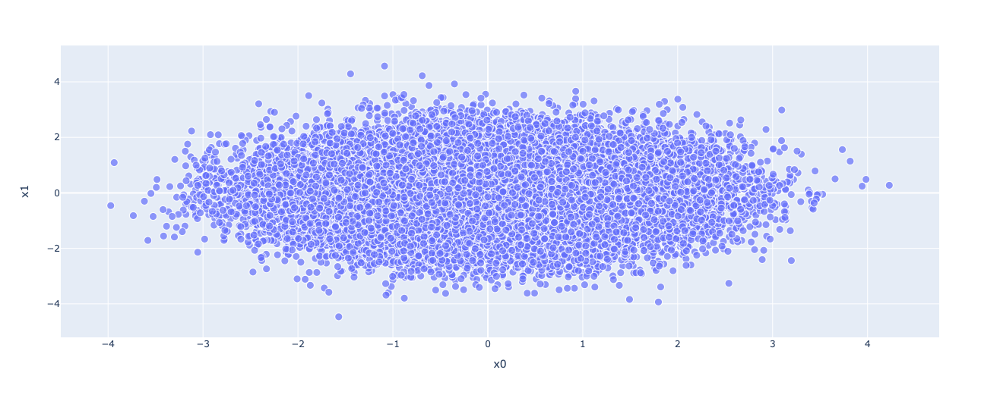

import pandas as pd
url = "https://raw.githubusercontent.com/PhilChodrow/PIC16B/master/datasets/tcc_ceds_music.csv"
df = pd.read_csv(url)Deep Music Genre Classification
Abstract
In this blog post, we will construct and implement deep learning neural network to classify song genres. The dataset we will be using is collected by researchers from Spotify and is available through Kaggle. The blog will build and train three different neural networks: one only based on lyrics, one only based on engineered features, and one on both lyrics and features. We will do training and testing and compare the performance of these three models.
Preparation Steps
Data Exploration
First, we acquire data from the url. Here are some first rows of the data.
df.head()| Unnamed: 0 | artist_name | track_name | release_date | genre | lyrics | len | dating | violence | world/life | ... | sadness | feelings | danceability | loudness | acousticness | instrumentalness | valence | energy | topic | age | |
|---|---|---|---|---|---|---|---|---|---|---|---|---|---|---|---|---|---|---|---|---|---|
| 0 | 0 | mukesh | mohabbat bhi jhoothi | 1950 | pop | hold time feel break feel untrue convince spea... | 95 | 0.000598 | 0.063746 | 0.000598 | ... | 0.380299 | 0.117175 | 0.357739 | 0.454119 | 0.997992 | 0.901822 | 0.339448 | 0.137110 | sadness | 1.0 |
| 1 | 4 | frankie laine | i believe | 1950 | pop | believe drop rain fall grow believe darkest ni... | 51 | 0.035537 | 0.096777 | 0.443435 | ... | 0.001284 | 0.001284 | 0.331745 | 0.647540 | 0.954819 | 0.000002 | 0.325021 | 0.263240 | world/life | 1.0 |
| 2 | 6 | johnnie ray | cry | 1950 | pop | sweetheart send letter goodbye secret feel bet... | 24 | 0.002770 | 0.002770 | 0.002770 | ... | 0.002770 | 0.225422 | 0.456298 | 0.585288 | 0.840361 | 0.000000 | 0.351814 | 0.139112 | music | 1.0 |
| 3 | 10 | pérez prado | patricia | 1950 | pop | kiss lips want stroll charm mambo chacha merin... | 54 | 0.048249 | 0.001548 | 0.001548 | ... | 0.225889 | 0.001548 | 0.686992 | 0.744404 | 0.083935 | 0.199393 | 0.775350 | 0.743736 | romantic | 1.0 |
| 4 | 12 | giorgos papadopoulos | apopse eida oneiro | 1950 | pop | till darling till matter know till dream live ... | 48 | 0.001350 | 0.001350 | 0.417772 | ... | 0.068800 | 0.001350 | 0.291671 | 0.646489 | 0.975904 | 0.000246 | 0.597073 | 0.394375 | romantic | 1.0 |
5 rows × 31 columns
Here are the engineered features of the data. Each song receives a score below each category.
engineered_features = ['dating', 'violence', 'world/life', 'night/time','shake the audience','family/gospel', 'romantic', 'communication','obscene', 'music', 'movement/places', 'light/visual perceptions','family/spiritual', 'like/girls', 'sadness', 'feelings', 'danceability','loudness', 'acousticness', 'instrumentalness', 'valence', 'energy']Here are the genres of music in the dataset. We first want to encode the genre. Here I use LabelEncoder from scikit learn.
df["genre"].unique()array(['pop', 'country', 'blues', 'jazz', 'reggae', 'rock', 'hip hop'],
dtype=object)from sklearn.preprocessing import LabelEncoder
# Creating a instance of label Encoder.
le = LabelEncoder()
# Using .fit_transform function to fit label encoder and return encoded label
label = le.fit_transform(df['genre'])
df.drop("genre", axis=1, inplace=True)
# Appending the array to our dataFrame with column name 'Purchased'
df["genre"] = labeldf['genre'].unique()array([4, 1, 0, 3, 5, 6, 2])Here is the percentage of each genre in the entire dataset. The music genre that occupies the largest proportion is Pop music (around 24.8%). It sets the base classification rate to be 24.8%.
df.groupby("genre").size() / len(df)genre
0 0.162273
1 0.191915
2 0.031862
3 0.135521
4 0.248202
5 0.088045
6 0.142182
dtype: float64Data Loader
Next, we want to define a data loader class, which we will use to load only batches of the data at a time. The indexer methods in TextDataFromDF class will return columns of lyrics, genre, and engineered features.
from torch.utils.data import Dataset, DataLoader
class TextDataFromDF(Dataset):
def __init__(self, df):
self.df = df
def __getitem__(self, index):
# 4 is lyrics, 30 is genre, 6-28 are features
return self.df.iloc[index, 4], self.df.iloc[index, 30], self.df.iloc[index, 6:28].values
def __len__(self):
return len(self.df)from sklearn.model_selection import train_test_split
df_train, df_val = train_test_split(df,shuffle = True, test_size = 0.2)
train_data = TextDataFromDF(df_train)
val_data = TextDataFromDF(df_val)train_data[194]('schmit couldn reason felt kind blue watch hello sweet friend come sing lullaby amend mama lookin acan start anew search finally come realize tellin lie livin afraid read line different today shin know couldn change mind twist point view kind choose reason lose lookin silly game',
4,
array([0.0013157896412805, 0.0013157895964813, 0.322708678411067,
0.0013157896186701, 0.0013157894770102, 0.0279231073879107,
0.00131578966616, 0.2961412546260131, 0.1707160272570204,
0.0959860879895431, 0.001315789547777, 0.0423188121300265,
0.0284165576046225, 0.0013157895199298, 0.00131578953515,
0.0013157894850158, 0.5689375067691976, 0.5644437607363535,
0.3122483054701862, 0.0001751012145748, 0.4466199505358615,
0.4394219318961712], dtype=object))Tokenize Lyrics
Further, we are going to tokenize the song lyrics and make it available for training. Basically, we split the sentence into words and assign number to each unique word.
from torchtext.data.utils import get_tokenizer
from torchtext.vocab import build_vocab_from_iterator
tokenizer = get_tokenizer('basic_english')def yield_tokens(data_iter):
for text, features, _ in data_iter:
yield tokenizer(text)
vocab = build_vocab_from_iterator(yield_tokens(train_data), specials=["<unk>"])
vocab.set_default_index(vocab["<unk>"])Batch Collation
We construct the function that is going to actually pass a batch of data to our training loop. The collation function will return three elements each set: the lyrics, the label (genre), and the features.
import torch
device = torch.device("cuda" if torch.cuda.is_available() else "cpu")
max_len = 100
num_tokens = len(vocab.get_itos())
def text_pipeline(x):
tokens = vocab(tokenizer(x))
y = torch.zeros(max_len, dtype=torch.int64) + num_tokens
if len(tokens) > max_len:
tokens = tokens[0:max_len]
y[0:len(tokens)] = torch.tensor(tokens,dtype=torch.int64)
return y
label_pipeline = lambda x: int(x)def collate_batch(batch):
label_list, text_list, feature_list = [], [], []
for (_text, _label, _features) in batch:
# add label to list
label_list.append(label_pipeline(_label))
# add text (as sequence of integers) to list
processed_text = text_pipeline(_text)
text_list.append(processed_text)
# add feature as float to list
feature_list.append(torch.tensor(_features.astype(float), dtype=torch.float32))
label_list = torch.tensor(label_list, dtype=torch.int64)
text_list = torch.stack(text_list)
feature_list = torch.stack(feature_list)
return text_list.to(device), label_list.to(device), feature_list.to(device)
train_loader = DataLoader(train_data, batch_size=8, shuffle=True, collate_fn=collate_batch)
val_loader = DataLoader(val_data, batch_size=8, shuffle=True, collate_fn=collate_batch)Training and Evaluation
import time
def train(model, dataloader, use_lyrics = True, use_features = False):
epoch_start_time = time.time()
# keep track of some counts for measuring accuracy
total_acc, total_count = 0, 0
log_interval = 300
start_time = time.time()
for idx, (text, label, features) in enumerate(dataloader):
# zero gradients
optimizer.zero_grad()
# customize model input based on conditions
if use_lyrics and not use_features:
input = text
elif use_features and not use_lyrics:
input = features
else:
input = (text, features)
# form prediction on batch
predicted_label = model(input)
# evaluate loss on prediction
loss = loss_fn(predicted_label, label)
# compute gradient
loss.backward()
# take an optimization step
optimizer.step()
# for printing accuracy
total_acc += (predicted_label.argmax(1) == label).sum().item()
total_count += label.size(0)
print(f'| epoch {epoch:3d} | train accuracy {total_acc/total_count:8.3f} | time: {time.time() - epoch_start_time:5.2f}s')
def evaluate(model, dataloader, use_lyrics = True, use_features = False):
total_acc, total_count = 0, 0
with torch.no_grad():
for idx, (text, label, features) in enumerate(dataloader):
if use_lyrics and not use_features:
input = text
elif use_features and not use_lyrics:
input = features
else:
input = (text, features)
predicted_label = model(input)
total_acc += (predicted_label.argmax(1) == label).sum().item()
total_count += label.size(0)
return total_acc/total_countFirst Neural Network: Only Using Lyrics
We are training our model only using the lyrics. The neural network architecture I used closely aligns to Professor Chodrow’s lecture note on Text Classification and Word Embedding. This network consists of an input embedding layer and an output linear layer.
from torch import nn
# first neural network that uses lyrics
class TextClassificationModel(nn.Module):
def __init__(self, vocab_size, embedding_dim, max_len, num_class):
super().__init__()
self.embedding = nn.Embedding(vocab_size+1, embedding_dim)
self.fc = nn.Linear(max_len*embedding_dim, num_class)
def forward(self, x):
x = self.embedding(x)
x = torch.flatten(x, 1)
x = self.fc(x)
return(x)We set the word embedding dimension to be 4.
vocab_size = len(vocab)
embedding_dim = 4
# initialize the model
lyricsModel = TextClassificationModel(vocab_size, embedding_dim, max_len, 7).to(device)# initialize ADAM optimizer and loss function
optimizer = torch.optim.Adam(lyricsModel.parameters(), lr=.001)
loss_fn = torch.nn.CrossEntropyLoss()
# set epochs to be 30
EPOCHS = 30
for epoch in range(1, EPOCHS + 1):
train(lyricsModel, train_loader, use_lyrics=True, use_features=False)| epoch 1 | train accuracy 0.207 | time: 24.12s
| epoch 2 | train accuracy 0.238 | time: 25.01s
| epoch 3 | train accuracy 0.258 | time: 25.73s
| epoch 4 | train accuracy 0.281 | time: 26.31s
| epoch 5 | train accuracy 0.301 | time: 24.88s
| epoch 6 | train accuracy 0.334 | time: 24.94s
| epoch 7 | train accuracy 0.357 | time: 25.92s
| epoch 8 | train accuracy 0.379 | time: 24.62s
| epoch 9 | train accuracy 0.410 | time: 25.32s
| epoch 10 | train accuracy 0.438 | time: 25.38s
| epoch 11 | train accuracy 0.458 | time: 24.86s
| epoch 12 | train accuracy 0.484 | time: 24.88s
| epoch 13 | train accuracy 0.505 | time: 25.81s
| epoch 14 | train accuracy 0.525 | time: 25.73s
| epoch 15 | train accuracy 0.546 | time: 26.38s
| epoch 16 | train accuracy 0.564 | time: 24.84s
| epoch 17 | train accuracy 0.582 | time: 24.96s
| epoch 18 | train accuracy 0.599 | time: 24.71s
| epoch 19 | train accuracy 0.615 | time: 25.89s
| epoch 20 | train accuracy 0.636 | time: 26.10s
| epoch 21 | train accuracy 0.653 | time: 25.23s
| epoch 22 | train accuracy 0.665 | time: 25.25s
| epoch 23 | train accuracy 0.679 | time: 25.18s
| epoch 24 | train accuracy 0.694 | time: 27.20s
| epoch 25 | train accuracy 0.704 | time: 24.96s
| epoch 26 | train accuracy 0.717 | time: 26.47s
| epoch 27 | train accuracy 0.729 | time: 24.36s
| epoch 28 | train accuracy 0.738 | time: 25.45s
| epoch 29 | train accuracy 0.750 | time: 25.02s
| epoch 30 | train accuracy 0.762 | time: 24.65sWe see the training accuracy increases over epochs and arrives at 76.2% accuracy. Now we evaluate the model on the testing data.
evaluate(lyricsModel, val_loader, use_lyrics=True, use_features=False)0.26343612334801764The accuracy of the first neural network using only lyric only gives us 26.3% accuracy, which is only slightly larger than the base rate. Compare with 76.2% for training data, we suspect that the model was overfitted.
Second Neural Network: Only Using Features
Now, we only use engineered features to train the neural network. The neural network architecture I am building here contains have five linear layers.
df_train, df_val = train_test_split(df,shuffle = True, test_size = 0.2)
train_data = TextDataFromDF(df_train)
val_data = TextDataFromDF(df_val)
train_loader = DataLoader(train_data, batch_size=16, shuffle=True, collate_fn=collate_batch)
val_loader = DataLoader(val_data, batch_size=16, shuffle=True, collate_fn=collate_batch)import torch.nn as nn
from torch.nn import ReLU
# second neural network that uses features
class EngFeaturesClassModel(nn.Module):
def __init__(self, num_features, num_labels):
super().__init__()
self.pipeline = nn.Sequential(
nn.Flatten(),
nn.Linear(num_features, 128),
nn.ReLU(),
nn.Dropout(0.2),
nn.Linear(128, 64),
nn.ReLU(),
nn.Dropout(0.2),
nn.Linear(64, 32),
nn.ReLU(),
nn.Dropout(0.2),
nn.Linear(32, 16),
nn.ReLU(),
nn.Dropout(0.2),
nn.Linear(16, num_labels)
)
def forward(self, x):
return self.pipeline(x)num_features = 22
num_labels = 7
feature_model = EngFeaturesClassModel(num_features, num_labels).to(device)
# initialize optimizer and loss function
optimizer = torch.optim.Adam(feature_model.parameters(), lr=.001)
loss_fn = torch.nn.CrossEntropyLoss()
# set epoch to be 50
EPOCHS = 50
for epoch in range(1, EPOCHS + 1):
train(feature_model, train_loader, use_lyrics=False, use_features=True)| epoch 1 | train accuracy 0.286 | time: 14.22s
| epoch 2 | train accuracy 0.334 | time: 14.05s
| epoch 3 | train accuracy 0.339 | time: 14.42s
| epoch 4 | train accuracy 0.345 | time: 13.28s
| epoch 5 | train accuracy 0.353 | time: 13.61s
| epoch 6 | train accuracy 0.356 | time: 13.83s
| epoch 7 | train accuracy 0.358 | time: 15.70s
| epoch 8 | train accuracy 0.360 | time: 16.88s
| epoch 9 | train accuracy 0.364 | time: 17.78s
| epoch 10 | train accuracy 0.364 | time: 14.22s
| epoch 11 | train accuracy 0.369 | time: 14.71s
| epoch 12 | train accuracy 0.366 | time: 13.95s
| epoch 13 | train accuracy 0.370 | time: 14.64s
| epoch 14 | train accuracy 0.372 | time: 15.71s
| epoch 15 | train accuracy 0.373 | time: 15.22s
| epoch 16 | train accuracy 0.372 | time: 14.03s
| epoch 17 | train accuracy 0.374 | time: 14.18s
| epoch 18 | train accuracy 0.379 | time: 18.42s
| epoch 19 | train accuracy 0.375 | time: 14.13s
| epoch 20 | train accuracy 0.383 | time: 13.89s
| epoch 21 | train accuracy 0.377 | time: 14.06s
| epoch 22 | train accuracy 0.380 | time: 15.05s
| epoch 23 | train accuracy 0.378 | time: 14.89s
| epoch 24 | train accuracy 0.384 | time: 15.13s
| epoch 25 | train accuracy 0.381 | time: 19.34s
| epoch 26 | train accuracy 0.386 | time: 18.07s
| epoch 27 | train accuracy 0.383 | time: 14.48s
| epoch 28 | train accuracy 0.383 | time: 14.99s
| epoch 29 | train accuracy 0.384 | time: 14.70s
| epoch 30 | train accuracy 0.389 | time: 13.15s
| epoch 31 | train accuracy 0.383 | time: 14.29s
| epoch 32 | train accuracy 0.384 | time: 14.56s
| epoch 33 | train accuracy 0.386 | time: 15.49s
| epoch 34 | train accuracy 0.390 | time: 16.97s
| epoch 35 | train accuracy 0.391 | time: 14.01s
| epoch 36 | train accuracy 0.391 | time: 15.62s
| epoch 37 | train accuracy 0.392 | time: 15.12s
| epoch 38 | train accuracy 0.390 | time: 14.01s
| epoch 39 | train accuracy 0.390 | time: 14.20s
| epoch 40 | train accuracy 0.389 | time: 14.39s
| epoch 41 | train accuracy 0.389 | time: 14.24s
| epoch 42 | train accuracy 0.391 | time: 14.64s
| epoch 43 | train accuracy 0.392 | time: 15.28s
| epoch 44 | train accuracy 0.391 | time: 14.67s
| epoch 45 | train accuracy 0.395 | time: 14.80s
| epoch 46 | train accuracy 0.398 | time: 14.28s
| epoch 47 | train accuracy 0.395 | time: 16.61s
| epoch 48 | train accuracy 0.390 | time: 14.63s
| epoch 49 | train accuracy 0.396 | time: 14.35s
| epoch 50 | train accuracy 0.396 | time: 14.11sevaluate(feature_model, val_loader, use_lyrics=False, use_features=True)0.3744493392070485The final accuracy is around 37.4%, which is a larger improvement from predicting the genre only using lyrics.
Both lyrics and engineered features
Building the final neural network, we consider both lyrics and engineered features. The network has three pipelines, one for lyrics, one for features, and the other one for the combined, which is for the concatenated result of the lyrics and the features.
class CombinedNet(nn.Module):
def __init__(self, num_labels, vocab_size, embedding_dim, num_features, max_len):
super().__init__()
# lyrics model
self.lyric_pipeline = torch.nn.Sequential(
nn.Embedding(vocab_size+1, embedding_dim),
nn.Flatten(),
nn.Dropout(0.2),
nn.Linear(max_len*embedding_dim, num_labels))
# feature model
self.feature_pipeline = nn.Sequential(
nn.Flatten(),
nn.Linear(num_features, 512),
nn.ReLU(),
nn.Dropout(0.2),
nn.Linear(512, 128),
nn.ReLU(),
nn.Dropout(0.2),
nn.Linear(128, 32),
nn.ReLU(),
nn.Dropout(0.2),
nn.Linear(32, num_labels))
# Combined Layers
self.combine_model = nn.Sequential(
nn.Linear(14, 512),
nn.Linear(512, 256),
nn.Linear(256, 64),
nn.Linear(64, num_labels))
def forward(self, x):
# separate x into x_1 (text features) and x_2 (engineered features)
x_lyrics, x_features = x
# apply lyric pipeline
x_1 = self.lyric_pipeline(x_lyrics)
# apply feature pipeline
x_2 = self.feature_pipeline(x_features)
# ensure that both x_1 and x_2 are 2-d tensors, flattening if necessary
# then, combine them with:
x = torch.cat((x_1, x_2), 1)
# pass x through a couple more fully-connected layers and return output
return self.combine_model(x)train_loader = DataLoader(train_data, batch_size=16, shuffle=True, collate_fn=collate_batch)
val_loader = DataLoader(val_data, batch_size=16, shuffle=True, collate_fn=collate_batch)vocab_size = len(vocab)
embedding_dim = 3
num_features = 22
num_labels = 7
combined_model = CombinedNet(num_labels, vocab_size, embedding_dim, num_features, max_len).to(device)
optimizer = torch.optim.Adam(combined_model.parameters(), lr=.001)
loss_fn = torch.nn.CrossEntropyLoss()EPOCHS = 40
for epoch in range(1, EPOCHS + 1):
train(combined_model, train_loader, use_lyrics=True, use_features=True)| epoch 1 | train accuracy 0.309 | time: 26.07s
| epoch 2 | train accuracy 0.354 | time: 26.07s
| epoch 3 | train accuracy 0.361 | time: 26.26s
| epoch 4 | train accuracy 0.370 | time: 27.73s
| epoch 5 | train accuracy 0.381 | time: 26.10s
| epoch 6 | train accuracy 0.381 | time: 31.87s
| epoch 7 | train accuracy 0.392 | time: 31.11s
| epoch 8 | train accuracy 0.407 | time: 27.16s
| epoch 9 | train accuracy 0.414 | time: 28.44s
| epoch 10 | train accuracy 0.420 | time: 28.45s
| epoch 11 | train accuracy 0.432 | time: 26.51s
| epoch 12 | train accuracy 0.436 | time: 28.85s
| epoch 13 | train accuracy 0.447 | time: 27.98s
| epoch 14 | train accuracy 0.453 | time: 28.38s
| epoch 15 | train accuracy 0.464 | time: 27.27s
| epoch 16 | train accuracy 0.472 | time: 26.10s
| epoch 17 | train accuracy 0.485 | time: 26.36s
| epoch 18 | train accuracy 0.493 | time: 28.43s
| epoch 19 | train accuracy 0.498 | time: 26.11s
| epoch 20 | train accuracy 0.511 | time: 26.91s
| epoch 21 | train accuracy 0.517 | time: 25.98s
| epoch 22 | train accuracy 0.523 | time: 25.67s
| epoch 23 | train accuracy 0.535 | time: 25.22s
| epoch 24 | train accuracy 0.545 | time: 28.83s
| epoch 25 | train accuracy 0.547 | time: 31.67s
| epoch 26 | train accuracy 0.558 | time: 31.40s
| epoch 27 | train accuracy 0.566 | time: 31.25s
| epoch 28 | train accuracy 0.573 | time: 29.74s
| epoch 29 | train accuracy 0.580 | time: 27.59s
| epoch 30 | train accuracy 0.590 | time: 28.27s
| epoch 31 | train accuracy 0.599 | time: 26.19s
| epoch 32 | train accuracy 0.602 | time: 26.82s
| epoch 33 | train accuracy 0.612 | time: 27.40s
| epoch 34 | train accuracy 0.619 | time: 27.20s
| epoch 35 | train accuracy 0.627 | time: 27.24s
| epoch 36 | train accuracy 0.630 | time: 27.64s
| epoch 37 | train accuracy 0.640 | time: 27.41s
| epoch 38 | train accuracy 0.644 | time: 29.35s
| epoch 39 | train accuracy 0.651 | time: 27.29s
| epoch 40 | train accuracy 0.655 | time: 27.47sWe train the model for 40 epoch and arrives at 65.5% training accuracy.
evaluate(combined_model, val_loader, use_lyrics=True, use_features=True)0.3490748898678414We evaluate the third model and get a testing accuracy of 34.9%. The large discrepancy between training data accuracy and testing accuracy suggests an overfitting, which is similar what we have seen the first model. The accuracy of the third model is slightly lower than the second model that is only based on engineered features, implying that including more features does not necessarily improve the accuracy of deep learning neural network model.
Word Embedding Learned by My Model
Here I will visualize the word embedding learned by my lyricsModel. We employ PCA to lower-dimensionalize higher-dimension embedding space to a two dimensional one.
embedding_matrix = lyricsModel.embedding.cpu().weight.data.numpy()
# extract words from our vocabularies
tokens = vocab.get_itos()
# import PCA to get 2 dimensional representation
from sklearn.decomposition import PCA
pca = PCA(n_components=2)
weights = pca.fit_transform(embedding_matrix)
# plot
tokens = vocab.get_itos()
tokens.append(" ")
embedding_df = pd.DataFrame({
'word' : tokens,
'x0' : weights[:,0],
'x1' : weights[:,1]
})
embedding_df| word | x0 | x1 | |
|---|---|---|---|
| 0 | <unk> | 0.945412 | 0.005695 |
| 1 | know | -0.579282 | -1.324462 |
| 2 | like | -0.241303 | -2.381207 |
| 3 | time | -0.322583 | -1.412938 |
| 4 | come | -0.570501 | 1.544789 |
| ... | ... | ... | ... |
| 45635 | 한번쯤은 | -0.188535 | -0.387275 |
| 45636 | 함께라는 | -0.594271 | -1.230378 |
| 45637 | 힙부심뿐인 | 0.249295 | -0.804218 |
| 45638 | finished | 0.815232 | 0.135954 |
| 45639 | -0.308244 | -0.421865 |
45640 rows × 3 columns
import numpy as np
import plotly.express as px
import plotly.io as pio
fig = px.scatter(embedding_df,
x = "x0",
y = "x1",
size = list(np.ones(len(embedding_df))),
size_max = 10,
hover_name = "word")
fig.show()
Dots that represent words of the lyrics are everwhere. Personally, I am not very familiar with the lyrics used in different genres in English, so I do not see a clear pattern. If our neural network model trained on lyrics has learned word embeddings, the scatter plot should have 7 corners that represent the 7 genres, and words that are at the end of each corner are the most representative words for that genre. However, we do not see the corners here. This also explains why our neural network model trained only using lyrics does not have a good performance.
Conclusion
We constructed and trained three neural networks to classify music genre in this blog post. The three networks use (1) only lyrics, (2) only engineered features of the songs from Spotify, and (3) both lyrics and the engineered features. The base rate of the dataset for predicting a genre is 24.8%. For the result, these three models give us 26.3%, 37.4%, and 34.9% accuracy on testing data. Visualizing the word embedding plot, we found that the first model trained based on lyrics did not really learned the connection between words and how words could represent genres.
Writing this blog post, I had the opportunity to construct a neural network architecture and implement it for the first time. By reconstructing the network and adjusting learning rate, I see how adding layers and different learning rates could affect the learning process of the machine. I also learned how to combine two pipelines together when constructing my third neural network, which will be very useful when we train a model using different types of features. Writing only one data loader class and one training/evaluation loop stretches me to code more efficiently.